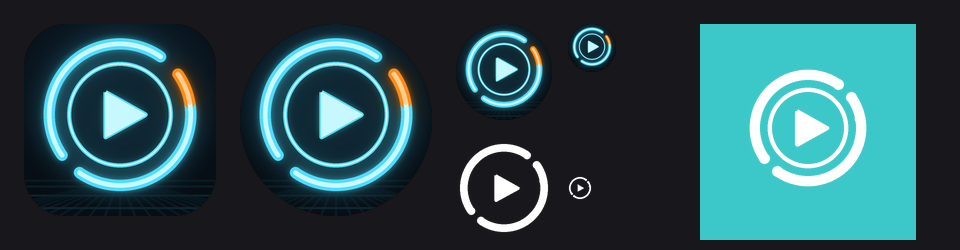
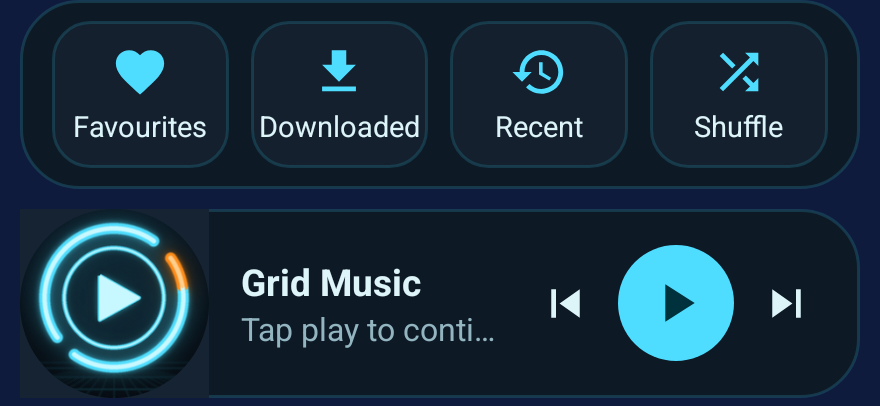
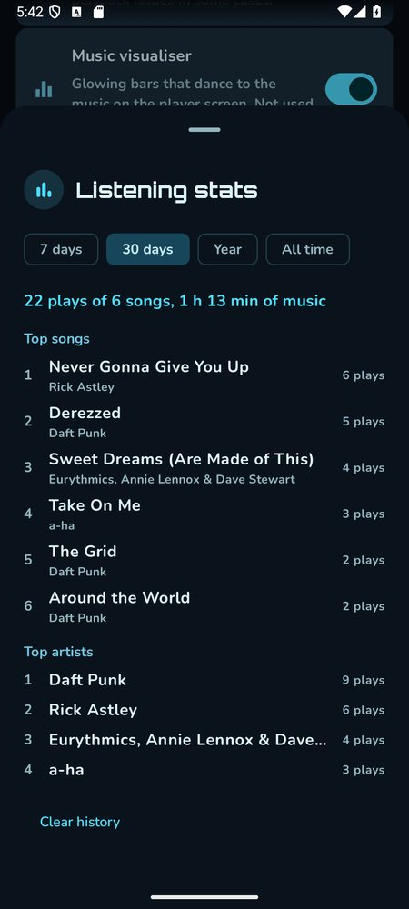
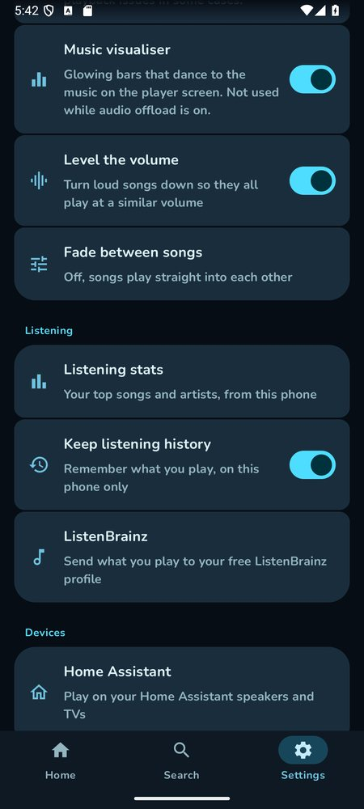
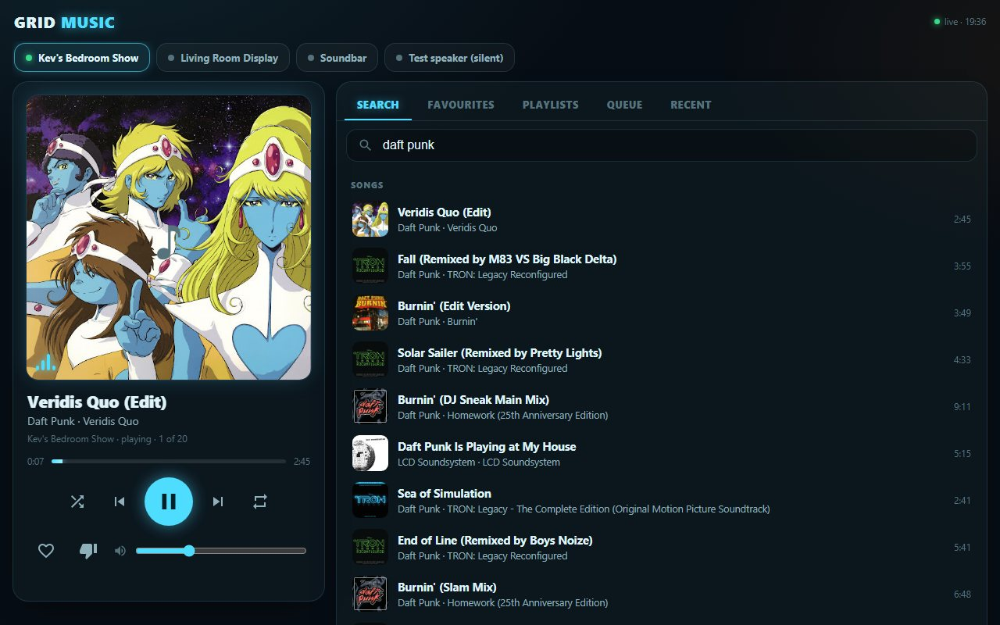

It began as a copy of an open-source YouTube Music app, changed so that it shows up in Google Maps' music controls. Then it got a Tron makeover, home-screen widgets, casting, endless radio and listening stats. The second half lives on the Pi and plays on the house's own speakers, by voice or from the wall panel.
Umihi Music is a free Android app by ilianoKokoro that plays YouTube Music without the official app's limits. It's built on the NewPipe Extractor and released under the GPL-3.0 licence, which lets anyone change it. So the plan was a personal copy: the same app, working the same way, with upgrades.
The code was checked before anything went on the phone. It talks to YouTube and Google, to GitHub to look for updates, and to two lyrics sites. No trackers, no analytics, nothing sent anywhere else. Verdict: safe to use.
Exactly the same app, working exactly the same way, with upgrades on top, and it has to appear as a music app in Google Maps so the playback controls show while driving.
It's a fork and it says so. The About screen names the original project and every library under it, and the release build has no self-updater, so it can never be swapped for the original by accident.
The first build was correct: it announced itself to Android as a proper media app. Maps still offered only YouTube Music and Spotify. It turns out Maps doesn't ask Android which music apps exist. It carries its own short list of package names, and nothing outside that list can appear.
Maps names four music apps it supports: Google Play Music, YouTube Music, Pandora and Spotify. A fifth app can't join, however well it behaves.
Before redesigning anything, the same app was built a second time under one of those four names (Pandora's), with a single build option. Nothing else changed.
Maps listed it at once and controls it: play, pause, skip and the track details. That copy became the everyday build.
Four name and logo concepts were on the table first: Envoy, Blacktop, Steelwave and Juke. Then the brief got sharper: a theme from the Tron film colours, a Tron-style logo, and the name Grid Music.
Dark mode is black-blue with cyan light-lines and a touch of orange. Light mode is ice-white with the same cyan and orange darkened so they stay readable. Headings are set in Orbitron. The theme picker also keeps the classic look and a "match my wallpaper" option.
A neon identity disc: cyan rings, one orange segment and a play button, over a faint grid floor. The same drawing becomes the launcher icon, the round icon, the one-colour themed icon and the notification glyph, and a script redraws all of them, so changing the design is one edit.

Everything the original does still works. On top of that:
A browsable library for Maps and Android Auto: Recently played, Downloaded, Playlists (pinned first) and Favourites. The car's Play button resumes the last queue, and voice requests like "play X" work. "Start with Bluetooth" plays when a chosen device, such as the car, connects.
Pin playlists to the top with a long-press, see which are available offline, and drag songs to reorder your own. New songs download over Wi-Fi every twelve hours, and one switch keeps the whole Favourites list on the phone.
Like adds the song to your YouTube Favourites. Dislike skips it. Both are on the player, the notification and the Maps and Android Auto controls.
When the queue runs out, the app asks YouTube Music for songs like the last one and carries on, so the music never just stops.
YouTube publishes how loud each song is. Loud songs are turned down to match the quiet ones. It only ever turns things down, never up.
An optional fade out and in between songs, and a sleep timer that eases the volume down instead of cutting off.
Glowing bars that move to the music on the player screen, with an orange peak cap that drifts down. It steps aside while the phone's hardware audio offload is on.
A local record of what's been played: top songs and artists over a week, a month, a year or all time. Optionally it sends plays to ListenBrainz, a free open listening-history service.
The login is encrypted with the phone's secure keystore, cookie logging was removed, backups leave the login out, and there's no self-updater.



A button on the player opens a list: Chromecast, Nest and Google TV; Home Assistant media players; and DLNA TVs and soundbars. The phone swaps its player for a remote one and runs a small web server, and the speaker pulls the song from it as a plain audio address. The phone then carries on as the remote control.
A switch tells Home Assistant what's playing, as a sensor with the song, artist, picture and where it's playing, so automations can react: dim the lights, show it on a dashboard.
Choosing "This phone" in the same list moves playback back, and the volume slider controls whichever device is playing.
"Play on…" worked, but it needed the phone awake and nearby. The house version moves the work to the Pi. A small service signs in to YouTube Music, keeps a queue for each speaker, stores the songs on disk and hands each speaker a signed link to play. Home Assistant carries the voice commands and the buttons to it.
Search, radio and the personal library come from YouTube Music. A song is fetched once into a cache on the Pi, and the next one is fetched while the current one plays, so changes are quick.
One watcher per speaker asks Home Assistant what it's doing once a second. Idle near the end of a song means it finished, so the next one starts. Idle earlier means someone stopped it, so the service stops driving. Something else cast to the speaker means it steps aside. When the queue runs out, radio carries on.
Cast speakers get the song with its title, artist and picture. The Echo Show and Dot get a plain audio link, the way the radio does. There's also a silent test speaker that just lets the clock run.
Play my FavouritesPlays your liked songs on the speaker you asked. Add "in the living room" to choose another, or "on shuffle".
Play my workout playlistFinds the playlist by name, even roughly.
Play the song DerezzedPlays the best match, then songs like it. "Play Derezzed by Daft Punk" works too.
Play music by Daft PunkSearches for the artist and plays a mix.
Play something like thisBuilds a new queue from the song that's playing.
Skip · go back · pause the song · resume the musicActs on whichever speaker Grid Music is playing on.
What song is this?Reads out the title and artist.
Like this song · dislike this songLikes add to Favourites. Dislike also skips.

Fetching a whole song in one request came down at about 30 KB/s: 55 seconds for 1.7 MB. Asking for it in 2 MB pieces took under three seconds, which is exactly what downloader tools do.
Its history keeps the contents of every service call. So the YouTube login is never sent through Home Assistant: it goes straight to the Pi. And the Music page watches a sensor, which is stored nowhere, instead of calling a service every couple of seconds, which, left open all day, would have written about 35,000 rows.
It reports only playing, paused or idle: no position, no length, no seeking, and "paused" after a stop. So the service times each song itself, moves on when the song must be over, and the Music page says so if a speaker can't jump around in a song.
Asking YouTube for playlists with an expired cookie returns an empty list, not an error, so the sign-in check couldn't tell. It now needs a real account name back before it believes the login.
Every voice command ran against the silent test speaker before any real speaker played a note. Real speakers were then tried one at a time, each with its owner's say-so, and with short jingles instead of full songs.
YouTube changes break the tools that read it every few weeks. A weekly check looks for newer versions of the phone app's extractor, and the Pi updates its own two libraries every night, tests a real song, and rolls back if the test fails.
An honest split, as of 30 September 2026.
Everything below is an idea, not a promise. They're grouped by what they do and tagged by effort, using the same tags as the roadmap.
The one step of the Citation One test that didn't run.
Same two paths as the speakers already tried, but not run yet.
"Your YouTube login has expired" or "songs have stopped loading", instead of the music just going quiet.
The six-second wait at the end of a radio run is the next songs being fetched too late. Two songs early removes it.
About 650 MB for 182 songs: instant starts, and it survives a YouTube hiccup.
The same queue carries on in another room and the old speaker stops.
"Stop the music in 30 minutes" with a fade, and "wake me with my Favourites at seven", starting quietly.
"Something chilled for cooking", "play the album Discovery".
"Play my Favourites" would use the library of whoever's wake word started it, given a second YouTube login.
The Show, Dot and Citation One together. They aren't in a Cast group, so they'd drift apart without more work.
The queue moves from room to room using the presence sensors.
The phone app already does this; on the Pi it would be done once, when a song is stored.
A true crossfade isn't possible through Home Assistant, but a shorter gap probably is.
Today the page hangs off the Media tab. A real tab means adding it to the navigation bar of every view.
On the panel and on the Show's screen. The phone app already fetches them this way.
Large art and controls on its display, next to the existing doorbell and dashboard pages.
Both already exist in the phone app's world; the Music page only lists and removes.
So the Next and Previous buttons on the Media tab's "Around the house" tiles, and Home Assistant's own media browser, control the Grid Music queue.
The Pi would hold the queue, so the phone could be switched off.
A button in the app that sends its YouTube login to the Pi, so the browser steps are never needed again.
One record across the app and the house, with ListenBrainz for both.
A free, open-source player turned into something that fits: it appears in the car's controls, looks like it belongs to the house, and plays on the speakers you're standing next to. The phone app and the Pi service are separate builds, so either keeps working without the other.
Built on Umihi Music by ilianoKokoro (GPL-3.0), the NewPipe Extractor, AndroidX Media3, Jetpack Compose and the Google Cast SDK; the house version uses ytmusicapi and yt-dlp. Not affiliated with or endorsed by YouTube, Google, Disney or MetaBrainz. The Tron theme is a colour tribute to the films. The app isn't distributed: the changes are kept in a private repository, and any copy handed to someone else would come with its source under the same licence.